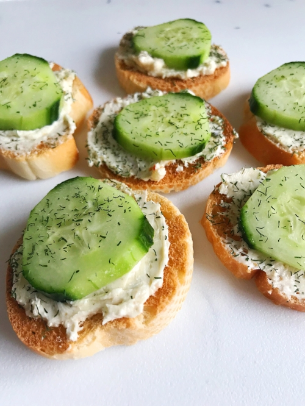

Cucumber Toast

Description
Some say it's an appetizer, but it can be a whole meal for true foodies!
How could anyone resist?! See below for very simple recipe!
Ingredients
- sliced baguette or any bread
- sliced cucumbers
- room temperature cream cheese
- fresh or dried dill
Steps
- Toast baguette or bread - Delicious even when not toasted!
- Spread cream cheese - Room temperature cream cheese makes it easy to spread
- Add as much sliced of cucumber as you like
- Sprinkle generously dill everywhere
- Assemble to eat *stomach growl*
What are you waiting for?!